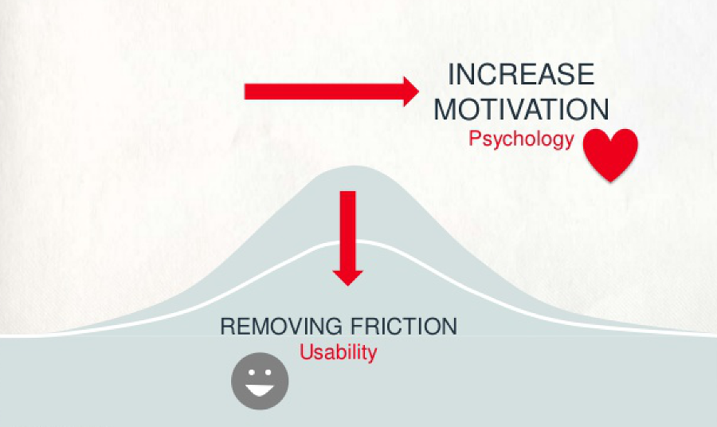

Web Design 101
From usability design to psychology
Me and the web

I'm a fascinated by human computer interactions. I make stuff (hack) for the web.
You and the web
Why would you be interested in web design? What are some use cases?
About the
web + web design
This stuff moves really really fast
Web 2.0
aka the social web*
From publishing to participation...in apps, and mobile too!
And if you're wondering
Web 3.0
AKA The semantic web
More of the same...but with more data for machines to read.
Web design for humans
Two ways of human design: usability and psychology
...But first
Can you have a Web Design 101 session without getting just a bit technical?
Seven* slightly more technical concepts
About web design
*Yes, there are many more
What makes a website?
A web page is a bunch of text files that give a page:
- Structure: via a HTML (HyperText Markup Language) file. It contains "tags" that places your content on the page
- Style: via a CSS (Cascading Style Sheet) file. It has all the formatting rules
- Interaction: via (usually) a JavaScript (a programming language) file. It takes care of the fancy interactive stuff
These languages - HTML, CSS and JavaScript - are the building blocks of every basic web page that renders in your browser (they are 'web standards')
Bonus: CSS hacks for this site
Original - Black - White - Sky - Beige - SimpleSerif - Night - Moon - Solarized
I'm not here to learn to code! Easier way please?!
Content Management System
- Things like WordPress, SquareSpace and Drupal.
- Pick a theme. Build a structure. Add content. Publish.
- Web development for dummies but users can edit content
- Trade-off in flexibility/customisation vs ease of development.
We want to design something quite specific...
Websites vs Web Apps
- Designed for a specific task.
- Highly customised (not built on a CMS).
- Usually has a database behind it.
Examples include applications like Gmail, Google Docs etc.
Does it work on my phone?
Responsive design
Websites are expected to work across all Internet enable devices
- Recall CSS (style): it adjusts the page for your screen size
- Recall JavaScript (interaction): it takes care of mouse and touchscreen gestures
- This means your content works everywhere
Will my site work on older browsers
Browser compatibility
Remember when we said the web moves fast...
- Old versions of Internet Explorer (8 and below) are a pain.
- You're good to go on Chrome, Firefox, Safari and anything current from Microsoft.
- Mobile browsers are a bit behind (new stuff works best).
- There are still some bugs.
Think about what devices your users will have. Design for all or provide a fallback.
Now what are you talking about!
Data security, open source and API's
- Website can be made very secure (be careful).
- The web itself is open source.
- API's (Application Programming Interfaces) let machines talk to your site (it a data thing).
I just want to design, what can I put on a website?
Multi-media (and more)
If you've seen it, you can do it.
- Text, audio, video, images.
- Nearly everything can be made 'interactive'
- You can also create audio, render images, 3D models and environments (and animate them)
Check out Chrome Experiments
Everything but the content:
Building a website?
Some terms and phrases (jargon) to be aware of if you're going through the process.
Site Architecture, User Flows and Wireframes
- Site architecture: the structure of information and how pages link together
- User flows: where you think about how a user moves through your site
- Wireframes: sketches of what the pages look like
Illustrated examples
Site maps (left) are usually hierarchical while wireframes (right) focus on layout and function
Technical scope and Concept Design
- Technical scope: decide what all the interactions do (buttons, fields etc.)
- Concept design: add aesthetics to the layout
Development, Testing and Roll Out
- Development: someone goes and codes it up
- Testing: testing of the site (preferably with users!)
- Roll Out: put your site 'online'
Example of a user centered web design process
Web design is generally more 'linear' then regular design
Web Design 101
Designing content
Start with a Content strategy
Answer these before you build anything!
- What does your site need to accomplish?
- What do you want users to do when they get there?
- What is a successful interaction?
- How does the website support your organisational or project goals?
- How will your users needs be satisfied?
Managing and curating content
You have more than the users needs!
- Use only what you need.
- Do a content audit (help here).
- Design "information" (next)
Information hierarchy
Users don't read the page like we intend. They scan.
- Inverted pyramid (journalist structure)
- Use headings: they helps users and search engines.
- Keep it short and sweet.
- Remember accessibility (link to useful resources)
- Think mobile first?
Streamline information for interactions
- Reduce options
- Reduce words
- Reduce user stress/
cognitive load (illusion counts!)
Too many options!
Paralysis by choice - see Iyenger and Lepper (2000)
Direct users through information hierarchy
The aim here is to discourage putting purchases on hold
The illusion of asking less of users
Compare this...
...with this (smart fields)
Images, audio and video
We are visual beings. And we like to be entertained.
But sometimes less is more.
Web Design 101
Human factors
Experience design lessons from psychology
Functional to meaningful web design
Connect behavioral goals
with your (project or organisational) goals
Doing this links design with the outcome you want
Measuring success: analytics
Understand behaviours matter to you
- Page views
- Click through
- Bounce rate (people come but don't come back)
- Registered users (sign ups)
- Adoption (regular users)
- Referrals etc.
There are tools to measure just about anything
...back to 'design'
Visual design
Mapping everything
on a web page to
cognition and affect
Visual taxonomy
from Anderson 2011
Attractive things work better
(and not just to artsy-folk)
- Visual attractiveness
- The grid
- Gestalt psychology
Personality matters?
- Personality: we identify with (or avoid) certain personalities (and brands).
- Tone: match the verbal and visual.
- Humour: is appropriate (or inappropriate) based on the situation, not the industry.
Nine more brain hacks in Web Design
Demonstration of psychology in web design
Progress and sequencing
We're more likely to take action when tasks are broken down
Show progress and break down complex tasks
Feedback Loops
We love to compare ourselves to others (and ourselves)
Status and achievements
We engage in activities when achievement is recognised
Status quo bias
(aka path of least resistance, defaults and suggestion)
Do Defaults Save Lives? (Johnson and Goldstein, 2003):
Organ donor rates in selected European countries
We're just a bit lazy sometimes
Challenges and games
We delight in challenges...that are appropriate
We are drawn to faces
The mere presence of others dramatically changes our behavior.
Facebook designs with a lot of social proofs. Notice there are many options for reasons (to confuse).
...and if that doesn't work
Notice the 'default suggestion' to find more friends
Surprise and delight
We take pleasure in nice surprises (and humour)
Framing + Anchoring
Our 'best estimates' (or perception) can be influenced if we 'primed' by totally different information.
Bringing it back together.
Five easy pieces
- The web changes fast...human behaviour, not so much.
- Design content for the user, not you.
- Be visual. Be engaging. Reinforce or replace text with visuals.
- Hack the brain. Incorporate human biases into design (but don't be evil).
- Obsess over detail and micro interactions. They matter.
And we're done...
Question??
Link to this presentation
http://www.littlesketch.es/YLab/DoE/webDesign.html
Note: press "s" for additional notes.